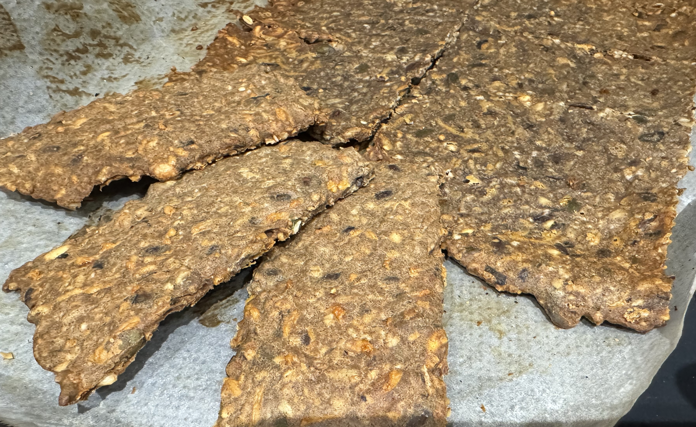

Crackers
Ingredients
20×
- 30 g de flocons d'avoine
- 60 g de graines de courge
- 30 g de graines de tournesol
- 130 g de farine de sarrasin
- 0.5 c. à c. de sel
- 130 ml d'eau
- 20 g d'huile d'olive
- 60 g de fromage râpé
- feuille de papier sulfurisé

Préparation
Étape 1
Mélanger 30 g de flocons d'avoine, 60 g de graines de courge, 30 g de graines de tournesol, 130 g de farine de sarrasin et 0.5 c. à c. de sel.
Étape 2
Incorporer 130 ml d'eau et 20 g d'huile d'olive dans le mélange sec.
Étape 3
Ajouter 60 g de fromage râpé.
Étape 4
Disposer une première feuille de papier sulfurisé. Étaler le mélange, poser une deuxième feuille par-dessus, et étaler avec un rouleau à pâtisserie.
Étape 5
Dessiner des lignes / triangles. Enlever la feuille du dessus délicatement.
Étape 6
Enfourner à 150ºC pendant 1h environ.